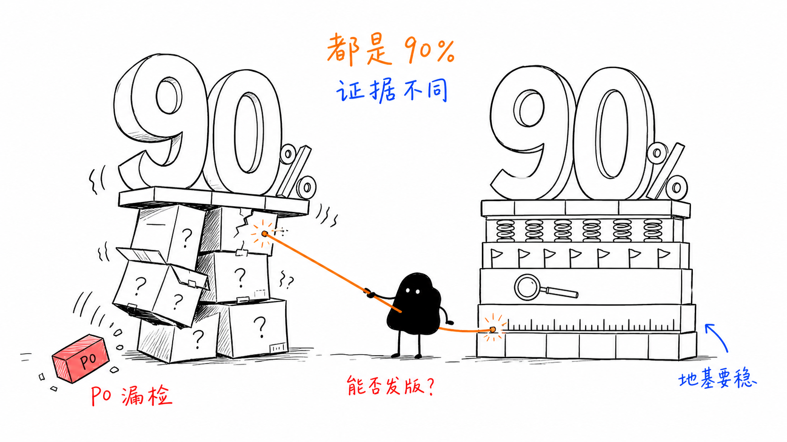
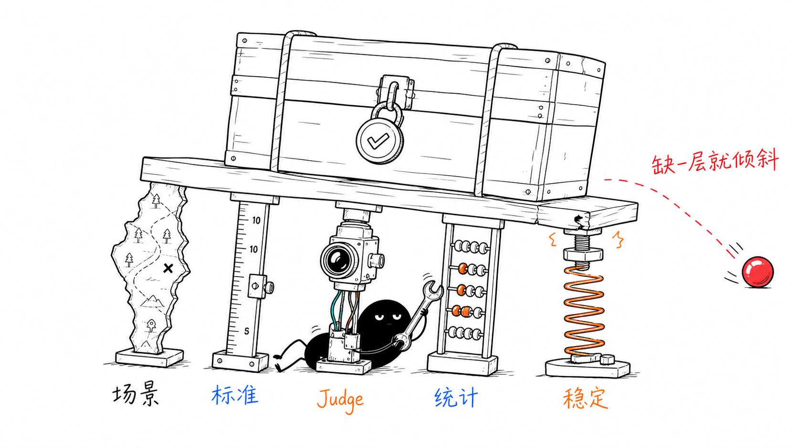

如何提升评测置信度
做 Agent 评测的人经常会遇到一个问题：跑出一套评测分数，到底能不能拿来做发版决策？大部分讨论停在"人机一致率 90%，所以可以信"。但这远远不够。一个 90% 的一致率可能完全来自大量易判的通过样本，同时对高风险场景的漏检率为零检出。这篇文章要回答的不是"人机一致率是多少"，而是"评测分数到底能不能信、能用来做什么决策"。

如何理解评测置信度
评测置信度，是对 Agent 评测结论可被信赖程度的综合判断。它反映在给定 Agent 版本、任务分布、评测标准和评估器下，评测结果能否稳定、准确地反映 Agent 的真实质量，并为相应决策提供足够证据。
举个例子。两个 Agent 都得到 90% 的离线通过率：
- Agent A 的样本大多是简单 FAQ，P0 场景很少，Judge 对 P0 漏检严重。
- Agent B 的样本经过风险分层，P0 场景单独统计，人工留出集验证充分，重复运行也稳定。
这两个"90%"的决策含义不同。对日常问题发现，A 可能勉强可用；对发版门禁或退款、下单等高风险操作，A 的证据明显不够；B 才可能支撑更强的发布结论。
所以，下面几种说法都不完整：
- "置信度就是人机一致率"：只覆盖评估器和人工标准是否一致。
- "核心场景都测了就够了"：覆盖场景不等于每个场景都有足够样本来估计质量。
- "置信度就是 95% 置信区间"：只覆盖样本统计波动。
- "置信度就是 Pass^k"：只覆盖 Agent 跨多次运行的稳定性。
- "分数越高，置信度越高"：忽略了样本偏差、评估器错误和决策风险。
这也是为什么我把它定义成一个带条件的概念，可以写成：
一个可用的置信度论证至少有五层：
| 层级 | 核心问题 | 要拿出的证据 | 主要防止的误判 |
|---|---|---|---|
| 1. 场景有效性 | 评测集是否覆盖业务真正关心的能力和风险 | 场景地图、风险分级、覆盖矩阵、未覆盖清单 | 只测主路径，遗漏异常、边界、P0 和长尾场景 |
| 2. 标准可靠性 | 不同专家是否在用同一把尺 | 人人一致、校准 Case、仲裁记录 | 指标定义模糊、不同角色各说各话 |
| 3. Judge 有效性 | 机器是否在正确地复制经人工仲裁的标准 | 混淆矩阵、各类 Precision / Recall / F1、留出集校验 | 机评与人同向漂移、漏检 P0 问题 |
| 4. 样本统计可信度 | 在已定义、已覆盖的场景框架内，观察到的分数是否足以代表目标人群 | 抽样框、分层结果、样本量、置信区间 | 小样本波动、长尾场景被平均分掩盖 |
| 5. Agent 运行稳定性 | 同一个 Task 重复执行是否稳定 | 重复 Trial、Pass@N、Pass^N、运行方差 | 一次碰巧成功、发版后随机退化 |
这五层依次回答五个不同的问题：我们是否测到了该测的业务风险、尺子是否稳定、Judge 是否会正确使用尺子、分数的统计误差有多大、Agent 是否每次都能稳定完成任务。任一层缺失，评测结论都需要相应收窄使用范围。

置信度应绑定于一个决策
离开决策谈"可信"是没有边界的。同一个 Judge 可能足以用于发现 Badcase，却不足以用于拦截一次高风险发版。因此，在谈置信度前先写清楚四件事：
- 评什么对象：哪个 Agent / 模型 / Prompt / Skill / 工具版本。
- 针对哪个人群：哪些业务场景、用户分层、风险等级和流量分布。
- 用什么标准与程序：哪套 Rubric、哪个 Judge 版本、哪些脚本、哪个执行环境。
- 用于什么决策：业务方案选型、每日质量观察、回归报警、发版门禁，还是高风险操作拦截。
建议将每次置信度结论写成一句完整的话：
在 2026-07-21 的评测集 V12 上，对于"订会议 / 订会议室"这类 P0 路由场景，Judge V3 可用于离线回归的异常筛查，但不能单独作为发版拦截依据，因为其对路由漏检的 95% 上置信界仍超过业务可接受阈值。
这样的结论比"人机一致率 90%，所以可以信"更严谨，也更能被业务、算法和 QA 共同使用。
第一层：场景有效性
场景有效性回答的不是“抽得够不够多”，而是“评测集是否测到了业务真正关心的能力和风险”。它应覆盖核心成功路径，也应覆盖缺参追问、异常恢复、路由转交、边界拒绝、P0 风险和变更带来的新场景。
这一步的产物不是一个总分，而是一张可审阅的场景覆盖矩阵：每个场景关联的业务目标、风险等级、预期行为、Case 来源、当前覆盖状态和 Owner。未覆盖的高风险场景必须明确列为结论边界，不能被平均分掩盖。
场景覆盖与统计可信度的区别
场景覆盖解决“评什么”；样本统计解决“在已覆盖的场景中，每个场景测多少，以及总体分数有多大误差”。两者缺一不可，且不能互相替代。
例子：订会议室 Agent。团队在 1,000 条“信息完整、权限正常、会议室可用”的请求上测得 98% 通过率，置信区间很窄。这只能说明正常预订主路径表现较稳定，不能证明 Agent 可以安全上线，因为“会议室冲突”“无权限预订”“缺少时间或参会人”“跨时区”“重复提交”等场景尚未进入评测集，这是场景有效性不足。补齐这些 Case 后，如果“无权限预订”只有 2 条样本，那么该场景已经被覆盖，却仍无法稳定估计失败率，这是样本统计可信度不足。
建立覆盖矩阵的最小步骤
- 从业务决策倒推能力：先定义什么结果算成功、什么错误不可接受。
- 按任务状态拆场景：正常输入、缺参、歧义、工具失败、环境冲突、权限边界和多轮恢复应分别建类。
- 单列风险与变更：P0、低频高损失场景和本次版本影响的能力不能只混入总体样本。
- 持续回流线上未知问题：线上 Badcase 经脱敏、聚类和仲裁后进入下一版 EvalSet。
第二层：标准可靠性
什么是标准可靠性
标准可靠性要回答的不是"标注员很认真吗"，而是：两名或多名符合资质的评测人员，根据同一份标注指南和证据，对同一个 Case 是否能得出足够接近的判断。
如果人们对"这个回答是否构成幻觉"都没有稳定答案，后面的 LLM Judge 就没有可学习的目标。让模型和人一致地复制人类混乱，不会产生信度。
人人对齐的正确流程
- 指定评测 Owner：他/她不是"独裁者"，而是对标准负责、组织仲裁、维护变更记录的角色。
- 先写评测合同：写清对象、证据范围、正例、反例、边界例、不适用情形和 unknown 的定义。
- 背靠背标注校准集：至少覆盖主路径、高风险、边界和高争议 Case，评测人员不看彼此答案。
- 会议仲裁而不是平均：争议 Case 需要回到业务成功标准和证据，形成可复用的裁决。
- 修改 Rubric 后重新校准：标准更新应有版本号、生效日期和影响评估，不能悄悄改口径。
一般需要几名标注员
业界没有一个适用于所有项目的固定人数，关键是每个 Case 是否有足够的独立判断，以及高风险分歧是否经过合适的人仲裁。常见配置是：普通场景由两名标注员背靠背标注，分歧和 P0 Case 再交给第三名评测 Owner 或业务专家仲裁；安全、合规等高风险场景则可直接安排三名或以上独立标注员。
- 2 人：成本最低，适合日常 Rubric 校准，可计算 Cohen's Kappa。
- 2 人 + 第 3 人仲裁：最常用的业务流程，既保留独立判断，也能把争议转成明确裁决。
- 3 人及以上：适合多人协作、缺失标注或高风险任务，可使用 Krippendorff's Alpha 观察整体一致性。
人数之外，还要记录每个 Case 的标注人数、是否独立完成、仲裁结果和最终采用的 Gold Label。否则“3 个人都同意”也可能只是看过彼此答案后的表面一致，不能直接当作标准可靠的证据。
不同标签形式用什么一致性指标
| 标签类型 | 优先指标 | 适用条件 | 注意点 |
|---|---|---|---|
| 两名标注员、名义分类 | Cohen's Kappa | 两个评分者、类别集相同 | 需同时看每个类别的混淆矩阵；不能只看 Kappa |
| 多名标注员、有缺失标注 | Krippendorff's Alpha | 多人、不完整评分、不同数据尺度 | 使用前需声明是 nominal、ordinal 还是 interval 距离 |
| 有顺序的 1-5 分 | Weighted Kappa 或 Krippendorff's Alpha | "4 分与 5 分"比"1 分与 5 分"更接近 | 评分锚点必须具体，否则统计只是精确地描述模糊 |
| 优劣成对比较 | 成对一致率 + 位置偏差检查 | GSB / SBS、版本比较 | 需随机化 A/B 左右位置和盲评 |
一致率不等于可靠性。假设 98% 的 Case 都是"通过"，两个标注员只要永远选"通过"，就能获得 98% 的表面一致率，却一个真正的失败都检不出来。Kappa / Alpha 试图扣除随机一致，但在类别极度不平衡时仍应同时报告各类别的数量和检出情况。
如果需要了解这些指标的定义、适用场景和具体例子，可以阅读《四个一致性指标怎么选》。
如何读 Kappa / Alpha
没有跨业务通用的及格线。下表只是一个排查起点，不是发版红线：
| 一致性水平 | 实践含义 | 建议动作 |
|---|---|---|
| < 0.60 | 评测标准存在较大歧义，或标注证据不足 | 先修 Rubric、证据展示和仲裁规则，不应直接训 Judge |
| 0.60 - 0.80 | 标准基本可用，但应关注特定类别和边界 Case | 继续对齐，将争议 Case 写回指南，再进行机评校准 |
| ≥ 0.80 | 标准较稳定，可作为 Judge 对齐基线 | 仍需分场景、分风险检查，不代表统计或运行层面已经可信 |
这个表的重点是帮助排查问题，不是给出一个可以绕开业务判断的统一阈值。对于 P0 风险场景，即使总体 Kappa 高，如果高风险样本上的漏判不能接受，仍不能拿来拦截发版。
第三层：Judge 有效性
人机一致比较的基准应该是"经仲裁的人类标准"
不要把 Judge 与单一标注员的答案对比后，就称为"人机一致"。单个人的判断可能是一次性波动、误读上下文或对标准的误解。更可靠的基准是：双人背靠背标注 → 争议仲裁 → 形成 gold / adjudicated label → Judge 对比该 label。
对于极其专业的场景，仲裁人员应是对业务风险负责的专家，不应只是平台方或一般标注员。
不要只看人机一致率
对二元判定，至少应提供混淆矩阵。以"高风险失败"为正类：
| 人类仲裁：失败 | 人类仲裁：通过 | |
|---|---|---|
| Judge：失败 | True Positive（检出了问题） | False Positive（误报） |
| Judge：通过 | False Negative（漏掉了问题） | True Negative（正确放行） |
常用指标的含义：
- Precision = TP / (TP + FP)：Judge 报出的问题中，真问题占比多少。低 Precision 会产生大量无效人工复核。
- Recall = TP / (TP + FN)：真正的问题中，Judge 检出了多少。对 P0 风险，Recall 往往比总体准确率重要。
- F1：Precision 与 Recall 的调和平均，适合两者都重要的场景，但不应掩盖 P0 的专项 Recall。
- False Negative Rate = FN / (TP + FN)：对"不能漏"的问题应直接报告这个数。
为什么一致率可能虚高？举个例子：如果 1,000 个样本中只有 20 个高风险失败，一个永远预测"通过"的 Judge 仍有 98% 的 accuracy / 一致率，但对失败类别的 Recall 是 0%。它不能用于 P0 风险筛查。

LLM Judge 的校准流程
- 建立校准集：从真实场景抽取 Case，覆盖主路径、高风险、边界、争议和长尾类别。
- 人工产生仲裁标准：先做人人对齐，再用仲裁结果作为 Gold。
- 分开开发集与验证集：只能用开发集调整 Prompt、few-shot 示例和结构化输出格式；最终结果必须在未参与调优的留出集上报告。
- 按维度校验而不只报总分："安全""引用支持""追问质量"应分别计算。
- 保留人工抽检：Judge 上线后仍要对线上样本抽检，因为人群、Prompt、模型和业务场景会变。
- 版本化 Judge：Judge 模型、Prompt、Rubric、few-shot 示例、外部知识依赖中任一个变更，都应视为新的 Judge 版本并重新校验。
第四层：样本统计可信度
一个分数只是样本对总体的估计
"本次通过率 95%"的完整含义应是：在一个特定样本上，观察到的通过率为 95%。它不自动等于"生产全量质量就是 95%"。
统计层面要同时回答：
- 总体是什么：全部线上流量、某个业务线、某个 Agent 版本还是某个关键任务集。
- 样本如何来的：随机抽样、分层抽样、定向挖掘、人工挑选还是 LLM 生成。
- 覆盖框架是否已定义：场景有效性层是否已明确主路径、高风险、长尾、新功能和不同地域 / 用户类型，并列出未覆盖项。
- 估计有多宽的不确定性：置信区间、分层结果、版本差异的显著性或稳定性。
分层抽样比"抽 200 条"更重要
在 Agent 评测里，不同场景的失败概率差异很大。如果只按总体流量随机抽样，高风险但低频的场景很可能一条都没抽到；如果只看 Badcase，又无法估计总体质量。建议至少区分：
| 分层 | 为什么要单独看 | 样本策略 |
|---|---|---|
| 核心主路径 | 影响大、频率高 | 稳定固定比例和必过集 |
| P0 高风险场景 | 不能被总体平均分掩盖 | 过采样，单独报告 Recall 和置信界 |
| 长尾与边界场景 | 容易回归，线上采样少 | 人工构造 + 线上回流，维护为挑战集 |
| 新版本 / 新功能 | 分布可能发生了变化 | 加大灰度和变更相关样本的权重 |
| 全量基线流量 | 用于估计总体质量和漂移 | 保留分层随机样本，不只看异常 |
抽样时应同时记录"原始流量占比"和"评测样本占比"。如果为了足够覆盖而过采样高风险场景，总体指标在聚合时需按流量或业务权重还原；而 P0 报告则仍应单独展示，不被权重稀释。
必须报告置信区间
对于通过率、正确率、Recall 等比率指标，不要只报点估计，应同时报告 95% 置信区间（实践中可优先使用 Wilson interval）。
例如，在 100 条样本中观察到 95 条通过，点估计是 95%，但 95% Wilson 置信区间约为 88.8% - 97.8%。这表示：样本同时兼容了一个可能更低的真实通过率，不能因为看到"95%"就直接下结论。
对 P0 事件，"样本中观察到 0 个事故"也不等于事故率为 0。一个实用的粗略规则是"3/n 规则"：在 n 个独立样本中没有观察到事件时，事件率的 95% 上界约为 3/n。例如 100 条样本 0 个事故，只能说事件率大致低于 3%，不能说"安全事件为 0"。

版本比较要比较"差值"与不确定性
这段里的配对比较、McNemar 检验、bootstrap、Winrate 和加权分数等术语，可以先阅读《版本比较里的几个统计术语》。
比较基线版与实验版时，不应只看"95% 比 93% 高 2 个点"。还要问：这 2 个点是超出样本波动的变化吗？
- 同一批 Task 对比两个版本时，应优先做配对比较，因为两个结果面对的是同一个难度分布。
- 二元通过 / 失败结果可用 McNemar 检验或基于配对样本的 bootstrap 评估差值。
- Winrate、加权分数、非线性聚合指标可使用 bootstrap 给出差值的置信区间。
- 无论用哪种方法，都应展示退化 Case 列表，因为小的总体改善可能掩盖了不可接受的 P0 退步。
第五层：Agent 运行稳定性
为什么单次成功不够
对单次问答，"此次答对了"已经有一定意义；对长程 Agent，同一 Task 的执行结果会受模型采样、工具返回、路由、时间、资源和环境状态影响。一次成功可能只是碰巧正确。
长程评测应先冻结可控因素：
- Task 输入、会话历史和初始状态。
- 模型、Prompt、Skill、Tool 协议、知识库和环境版本。
- 沙箱快照、账号、测试数据和外部依赖。
- 每次执行的最终状态、Trace、成本和时延。
如果环境不能重置，应明确标注这是"准实验"，不宜将结果当作严格的版本比较依据。
Pass@N 与 Pass^N 看的不是同一件事
| 指标 | 定义 | 适合回答的问题 | 不应被用于 |
|---|---|---|---|
| Pass@N | 同一 Task 运行 N 次，至少成功一次 | "这个 Agent 具不具备解决该问题的能力" | 声明生产上足够稳定 |
| Pass^N | 同一 Task 运行 N 次，每次都成功 | "这个 Agent 是否能稳定地解决该问题" | 衡量能力上限或搜索复用价值 |
如果单次成功概率为 p，在每次执行近似独立的情况下：
P(连续 N 次都成功) = pN
例如单次成功率 p = 80%，运行 5 次的 Pass@5 约为 99.97%，但 Pass^5 只有 32.8%。前者告诉你"它有机会做对"，后者告诉你"它还远不稳定"。

与发版的关系
对发版决策，应将两个问题分开：
- 能力问题：新版本是否比基线更能完成任务？看 Task Success、Pass@N、Winrate。
- 可靠性问题：新版本是否会随机失败，或在关键场景重复退步？看 Pass^N、失败方差、任务级失败分布。
对 P0 任务应更强调"每次都不能错"而不是"总有一次能成功"。如果业务对失败容忍度很低，还应结合更大的任务样本、更多重复 Trial、更强的环境隔离与人工验收。
二元化、未知与 P0 风险
二元化是降低测量误差的工具，不是置信度的充分条件
二元 Rubric 的优点是将"回答是否很专业"这类模糊问题，改写为"是否明确说明了 X 的风险""是否根据 Y 证据给出结论"等可观察的判断。它通常能降低人人、人机之间的方差。
但它不解决以下问题：
- 评测集是否覆盖了业务目标、异常路径和 P0 风险。
- Rubric 是否真的衡量了业务目标。
- Judge 是否在关键类别上漏判。
- 样本是否代表真实流量。
- Agent 是否会在重复运行中随机失败。
因此，二元化是降低测量误差的手段，不是五层置信度论证的替代品。
unknown 不是"第三种得分"
unknown 的正确含义是"依据当前证据无法做出可靠判断"。它至少需区分为三类原因：
| unknown 类型 | 典型原因 | 处理动作 |
|---|---|---|
| 证据不足 | 没有 Reference、Trace 截断、工具返回缺失 | 补观测字段、快照或数据协议 |
| 标准不清 | Rubric 没定义边界，专家也争议 | 仲裁、修改 Rubric、添加反例 |
| 不适用 | Case 本身不应被这个维度评估 | 标注 N/A，并从该维度的分母中排除 |
不应将 unknown 静默地当成通过、失败，或从分母中删除。每一种处理都会改变指标含义，必须在报告中声明。
P0 是一套单独的接受标准
对 P0 风险（例如越权、误付款、隐私泄露、安全边界突破），不应用综合分或加权平均做覆盖。应为每个 P0 风险定义：
- 业务定义与证据要求。
- 发版时的硬门禁，例如是否允许任一已知 P0 Case 失败。
- 对该风险类别的 Judge Recall、False Negative Rate 及其置信区间。
- 负样本（安全通过的正常 Case）上的 Precision、误报成本和人工复核流程。
- 线上全量硬规则、异步抽样 Judge、人工复核之间的职责边界。
五层置信度如何嵌入评测流程
| 阶段 | 实施动作 | 输出产物 |
|---|---|---|
| 1. 数据冷启动 场景有效性 |
梳理业务成功标准、任务状态、风险分级和版本变更影响，建立场景覆盖矩阵 | 场景地图、覆盖矩阵、P0 清单、未覆盖项 |
| 2. 标准冷启动 标准可靠性 |
Case 分类、标签 / Rubric 配置、背靠背标注、人工质检与仲裁 | Rubric V1、裁决集、一致性报告 |
| 3. Judge 冷启动 Judge 有效性 |
LLM / Python Evaluator 配置、人工质检机评结果、人机比对 | Judge V1、混淆矩阵、分类别 P / R / F1 |
| 4. 离线回归 样本统计 + 运行稳定 |
版本化 EvalSet / TaskSet、分层报告、重复 Trial、基线 / 实验对比 | 置信区间、退化 Case、Pass@N / Pass^N、Winrate |
| 5. 线上监控 各层持续验证 |
Production Trace 抽样、规则 / 机评、人工复核、漂移与回流 | 线上质量趋势、Judge 漂移信号、新一版 EvalSet |
| 6. 发版决策 合并五层证据 |
按场景覆盖、结果与过程证据、样本不确定性和运行稳定性审阅 | "可发 / 不可发 / 需补证据"及限定条件 |
评测平台可以提供数据集、标注、质检、LLM / Python Evaluator、人机一致率、分析报告、Pipeline 和长程 Task 执行等能力。但"要什么样本、P0 到底是什么、多久重新校准 Judge、发版哪个结果能拦截"仍需业务 Owner、产品、算法、QA 共同定义。平台不应代替业务做风险取舍。
一份可交付的"置信度报告卡"
每个重要评测维度或发版报告，建议至少包含以下字段：
报告卡的价值在于：它迫使一个团队说清楚"能信什么、不能信什么、为什么"，避免用一个好看的总分代替决策证据。
示例：怎样评估"RAG 幻觉率"是否可信
假设业务目标是：知识库应用在指定资料内回答时，要尽量避免无证据的关键事实陈述。一个可靠方案不应只是"配一个幻觉 Judge，跑出一个幻觉率"。
场景层
- 先确认评测集覆盖单文档、多文档、冲突证据、无证据、长文档和不同知识域，而不是只挑容易回答的问题。
- 把医疗、价格、时效等高风险 Claim 单列为 P0 或高风险场景，不让它们被大量普通问答的平均分掩盖。
标准层
- 定义评测单元为"关键 Claim"，不是整个回答的主观印象。
- 每个 Claim 只有"被证据支持"、"不被证据支持"、"证据不足无法判断"三种结果。
- 对"证据是否支持"给出正例、反例和互相矛盾文档的裁决规则。
- 先对标注员做背靠背校准，争议 Case 交给知识库 / 产品 Owner 仲裁。
Judge 层
- 输入应包含 Claim、用于支持的文档片段、引用位置和原回答。
- Judge 需输出结果、证据片段和判断理由，以便质检。
- 人机验证不只看总体一致率，而是特别查看"人定义为不被证据支持，Judge 却放行"的 FN。
- 如果高风险 Claim 漏判率不可接受，Judge 最多只能用于筛查和人工复核排序，不能单独代替人工门禁。
样本与运行层
- 离线报告分层展示 Groundedness、引用正确率、引用完整率与对应置信区间。
- 线上按版本、知识库、用户类型和负反馈好信号分层抽样，新发现的失败模式回流离线 EvalSet。
- 如果模型每次生成不同，对关键 Query 需要重复运行，区分"本次回答有证据"和"这个 Query 在每次运行中都能稳定地基于证据回答"。
FAQ：业务沟通
问题 1：你们这个评测有多可信？
评测可信不等于人机一致率高。我们会看五层：第一，评测集是否覆盖业务真正关心的核心、异常、边界和 P0 场景；第二，业务专家之间是否已经把"好 / 不好"拉齐；第三，Judge 对经仲裁的人工标准是否有足够的 Recall 和 Precision；第四，在已覆盖的场景中，样本量和置信区间是否足以支持总体判断；第五，对长程 Agent 来说，同一个 Task 重复运行是否稳定。二元 Rubric 主要降低标准与 Judge 判断的测量误差，不能替代其他层的证据。
所以第一步我们会先用专家负责的评测标准做背靠背对齐，第二步再校准 Judge。对确定性结果我们优先用 Python 或最终状态断言；对语义质量才用 LLM Judge。报告会单独展示 P0 漏判、样本置信区间和重复执行稳定性，以判断这个指标可以用于筛查、回归，还是真正的发版门禁。
补充来说，我们推荐二元化不是认为所有质量都只能用是 / 否表达，而是对可以下钻的模糊指标，先把它拆成可观察、可仲裁的判断，降低人与 Judge 的测量误差。如果业务确实需要 1-5 分或比较强弱，也可以支持，但必须配好分级锚点、一致性校验和聚合规则。
问题 2：满足什么条件才能上线呢？
不能把“人机一致率达到 90%”当成单独的上线条件。上线要看这套证据是否足以支撑当前发布决策，至少需要同时满足以下条件：
- 场景覆盖：核心路径、异常路径、边界、长尾和 P0 风险都已进入评测；未覆盖的高风险场景已明确列为上线限制。
- 标准可靠：至少两名标注员独立标注，争议由评测 Owner 或业务专家仲裁，且各类别的 Kappa / Alpha、样本量和争议 Case 可追溯。
- Judge 能检出问题：在人工仲裁后的留出集上，按风险等级查看混淆矩阵、Recall 和漏检率；P0 漏检必须低于业务设定的风险上限。
- 统计不确定性可接受：总体分数和相对基线的差值带有置信区间，版本差异没有被样本波动完全解释，且没有不可接受的 P0 退化。
- 运行稳定：同一 Task 重复运行的成功率、Pass@N / Pass^N 或运行方差达到预先约定的要求。
- 回归与灰度通过：修复后的 Case 已回归通过，并已定义线上监控指标、P0 告警和回滚条件。
例如，一次发布结论可以写成：“在评测集 V12 和当前目标场景分布下，实验版相较基线提升 2.1 个百分点，差值的 95% 置信区间为 [+0.6, +3.4]；P0 场景 Recall 达到业务要求，未发现新增不可接受退化，重复运行和回归集均通过，因此允许小流量灰度。”其中具体阈值应由业务负责人按风险制定，不是通用行业标准。
常见误解
- 人机一致率 90% 就足以上线。不对。90% 可能完全来自大量易判的通过 Case，同时漏掉了 P0 风险。
- 二元化后就不需要人工。不对。二元化降低歧义，人工仍要定标准、处理争议、校准 Judge 和抽检线上漂移。
- 样本量大就代表性好。不对。大量同类主路径样本无法弥补 P0 和长尾场景缺失。
- 发版只要看离线分数。不对。离线负责可控回归，在线负责发现新的分布漂移和未知失败。
- 只要 Pass@N 高，Agent 就是稳定的。不对。Pass@N 高可能意味着多试几次总能碰对；稳定性更接近 Pass^N 和失败分布。
- 分数下降就代表质量退化。不一定。先看置信区间、分层差异、Judge 版本和样本分布是否改变。
参考资料
- Cohen, J. (1960). A Coefficient of Agreement for Nominal Scales. Educational and Psychological Measurement.
- Krippendorff, K. Content Analysis: An Introduction to Its Methodology. 关于 Krippendorff's Alpha 的定义与使用边界。
- Wilson, E. B. (1927). Probable Inference, the Law of Succession, and Statistical Inference. 比率置信区间的 Wilson interval。
- Zheng et al. (2023). Judging LLM-as-a-Judge with MT-Bench and Chatbot Arena. 关于 LLM Judge 与人类偏好的一致性及位置、长度、自偏好等偏差。arxiv.org/abs/2306.05685
- Anthropic (2026). Demystifying evals for AI agents. 关于 Task、Trial、Outcome、Transcript，以及 Pass@k 和 Pass^k 的 Agent 评测实践。anthropic.com/engineering/demystifying-evals-for-ai-agents
- Ground Truth Based Eval 与 Rubric Based Eval：评测方法选型指南
- 业务在线评测样本治理
一句话记住
场景覆盖解决"有没有测到该测的风险"，人人对齐解决"尺子是否稳"，人机对齐解决"Judge 是否跟得上尺子"，统计推断解决"样本分数的误差有多大"，重复 Trial 解决"Agent 是否每次都能把事办好"。五层都站得住，评测结果才有资格进入发版决策。